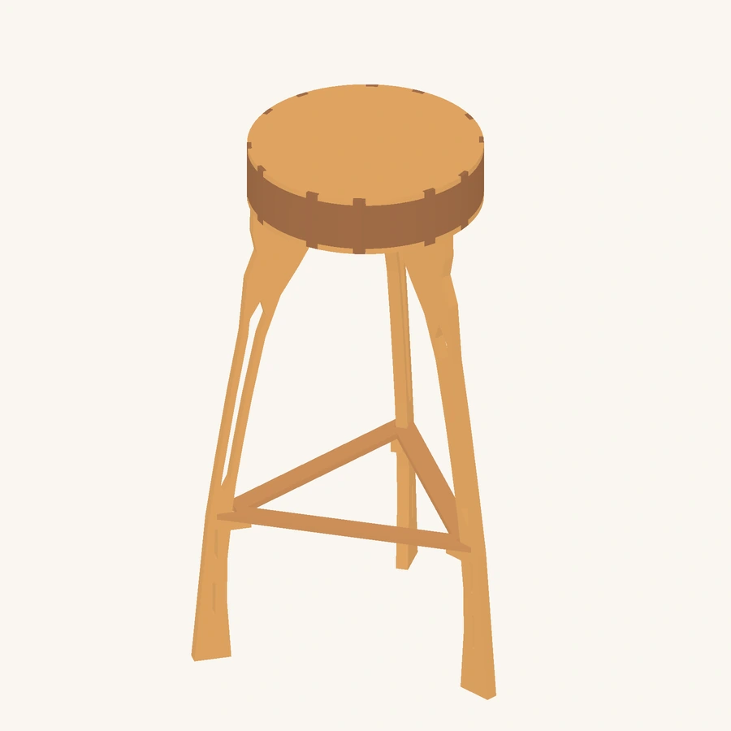

מעמד לעציץ / הדמיית תכנון
מעמד לעציץ
PST-230 · שלוש רגליים · פלטה עגולה
מעמד בעל שלוש רגליים וחיזוק משולש, שתוכנן בחיבורי עץ לחיתוך לייזר. התמונה והמודל מציגים תכנון, ולא מוצר שכבר נבנה ואושר.
בתכנון — טרם אושר לייצור

מידות וחומרים
- קוטר פלטה עליונה
- 230 mm
- גובה כולל
- 550 mm
- חומר שלד ורגליים
- 6 mm דיקט בירץ׳
- מעטפת גמישה
- 4 mm דיקט בירץ׳
המודל מציג תכנון, לא מוצר מוגמר
גרסת PST-230 V3 שומרת על הפלטה העליונה עם חיבורי Finger Joints היקפיים, ללא חריצים פנימיים במשטח. חיבורי השלד והנסטינג נבדקו דיגיטלית. בדיקות חיתוך, כיפוף מעטפת, הרכבה, עמידות ללחות, חוזק ויציבות תחת עומס טרם בוצעו בפועל.
מודל תלת־ממדי אינטראקטיבי
הדמיית הרכבה PST-230 המבוססת על 22 חלקי CAD. המודל מציג גיאומטריה תכנונית ללא בדיקות שימוש פיזיות; אינו אישור חוזק או ייצור.
גררו לצדדים לסיבוב, צבטו לזום או השתמשו בכפתורים. גרירה אנכית גוללת את העמוד. Esc לחזרה לתמונה.